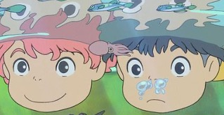

Theory of this anime
Fujimoto, a wizard who was once a human, lives underwater with his daughter Brunhilde and her numerous smaller sisters, who are goldfish-like creatures with human faces. While she and her siblings are on an outing with their father in his four-flippered submarine, Brunhilde sneaks off and floats away on the back of a jellyfish. After an encounter with a fishing trawler, she becomes trapped in a glass jar and drifts to the shore of a small fishing town where she is rescued by a five-year-old boy named Sōsuke. While shattering the jar with a rock, Sōsuke cuts his finger. Brunhilde licks his blood, healing the wound almost instantly. Sōsuke names her Ponyo and promises to protect her. Meanwhile, a distraught Fujimoto searches frantically for his lost daughter whom he believes to have been kidnapped. He calls his wave spirits to recover her, leaving Sōsuke heartbroken and confused by what happened. Ponyo refuses to let her father call her by her birth name, declaring her desire to be a human named Ponyo. She magically begins changing into a human, a power granted to her by Sōsuke's human blood that she licked. Fujimoto forces her back into her true form and leaves to summon Ponyo's mother, Gran Mamare. Meanwhile, Ponyo, with the help of her sisters, breaks away from her father and inadvertently uses his magic to make herself human. The huge amount of magic that she releases into the ocean causes an imbalance in nature, resulting in a tsunami. Ponyo goes back to Sōsuke, who is amazed and overjoyed to see her. His mother, Lisa, allows her to stay at their house. Lisa leaves after the tsunami subsides to check up on the residents of the nursing home where she works, promising Sōsuke that she will return home as soon as possible. Gran Mamare arrives at Fujimoto's submarine. Sōsuke's father, Kōichi, sees her traveling and recognizes her as the Goddess of Mercy. Fujimoto notices the moon appears to be falling out of its orbit and satellites are falling like shooting stars, symptoms of the dangerous imbalance of nature that now exists. Gran Mamare reassures him, and declares that if Sōsuke can pass a test, Ponyo can live as a human and the balance of nature will be restored. Fujimoto, still worried, reminds her that if Sōsuke fails the test, Ponyo will turn into sea foam. The next day, Sōsuke and Ponyo find that most of the land around the house has been covered by the ocean. Since it is impossible for Lisa to come home, the two decide to find her. With Ponyo's magic, they make Sōsuke's pop pop boat bigger to traverse the waters, seeing marine life from the Late Devonian period and more people on boats. When they reach the forest, however, Ponyo tires and falls asleep, and the boat slowly reverts back to its original size. Sōsuke drags Ponyo to the shore, where he finds Lisa's abandoned car. As they continue walking, Ponyo mysteriously reverts to her fish form. Meanwhile, Lisa and the residents of the nursing home are temporarily able to breathe water because of Gran Mamare. Ponyo and Sōsuke encounter Fujimoto, who warns the boy on the imbalance of nature, begs him to return Ponyo to him. Despite their attempt to flee, they are captured, and Fujimoto takes them down to the protected nursing home. Sōsuke reunites with Lisa and meets Gran Mamare, with whom Lisa has just had a long private conversation. Gran Mamare asks him if he can love Ponyo whether she is a fish or human; Sōsuke confirms that he does. She then tells her daughter that if she chooses to become human once and for all, she will have to give up her magical powers. Ponyo agrees, and she is encased in a bubble given to Sōsuke, who is instructed to kiss it to complete Ponyo's transformation, as the balance of nature is restored. The previously stranded ships head back to port. Fujimoto respects his daughter's choice, having decided he can trust Sōsuke. Ponyo then joyfully jumps high in the air and kisses Sōsuke, completing her transformation as a human.